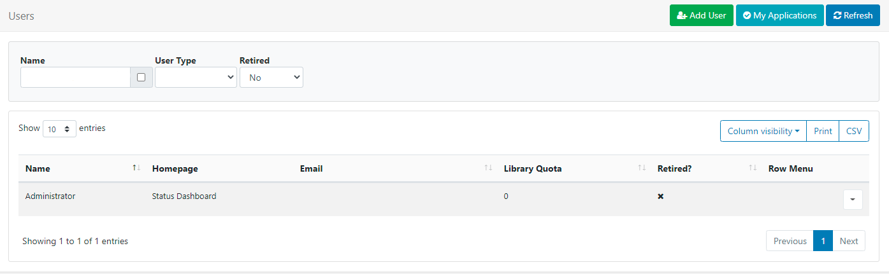
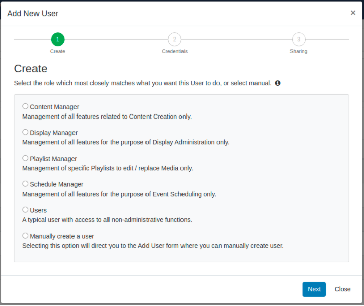
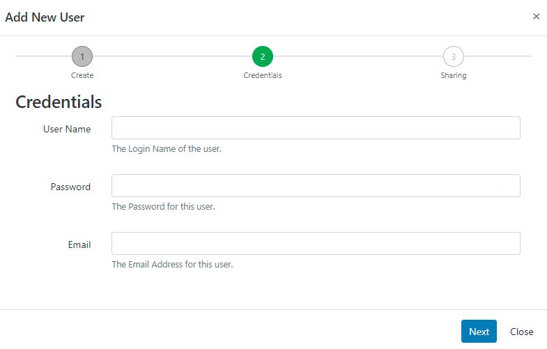
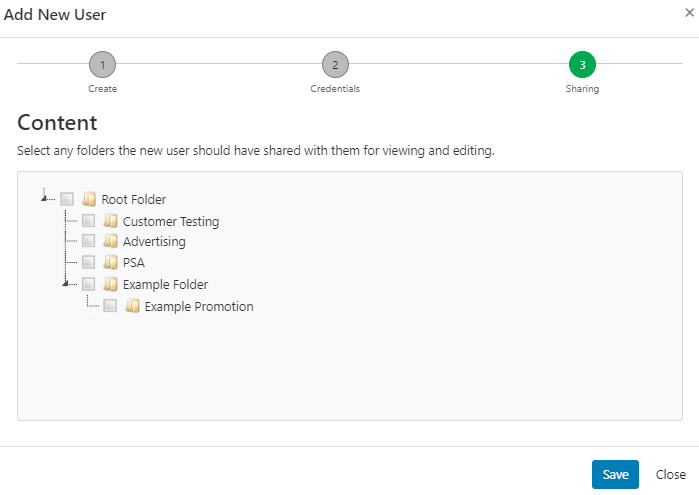
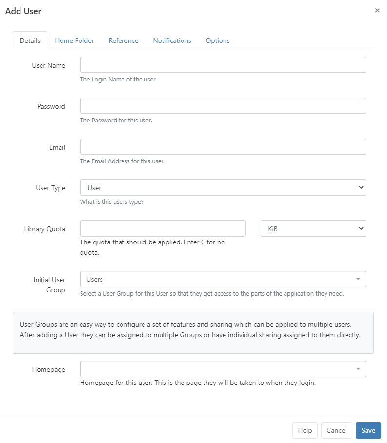
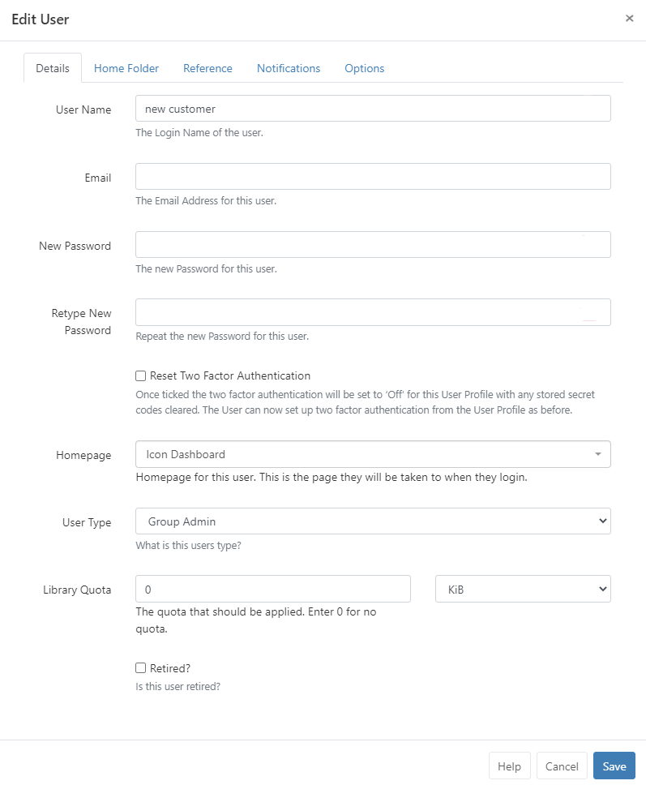
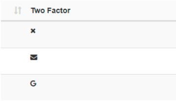

Users are administered in the CMS by clicking on Users under the Administration section on the main menu. The Users Grid
will open for you to add new and manage existing Users.

Adding Users
Click on the Add User button.
There are two ways in which Users can be added, via an onboarding wizard using pre-configured User Groups or information
manually added.

Select from one of the pre-configured Groups to go through the Onboarding Wizard or select the last option to Manually
create a user to be taken to the Add User form:
Onboarding Wizard
Select a Group and click Next
Features are pre-configured for the groups common
functions and can be modified to suit by Editing the User record!

Create a User Name and Password which will be used as their login and to
identify the User within the CMS.
The password must contain at least 8 characters and include upper and lower case letters as well as at
least one number or special character!
Complete the Email address for this user, click Next
A user can complete/edit their email address after login from the User
Profile!
Select from available Folders to share objects with the new User.
All objects contained or moved into a Folder will inherit the View, Edit, Delete Share options that have been enabled for Users/User
Groups!

When allowing Users, (such as a Group Admin) to add Users using the Onboarding Wizard, ensure that Folders is
enabled in Features if they are required to Share Folders with the
User for viewing and editing!
Home Folders can be set by right clicking a Folder and selecting the Set as Home option:
The newly created User will be added and can be viewed in the Grid.
Add User form

To always show the manual Add User form when adding new user’s to the system instead of the onboarding wizard,
use the option available in Preferences from the User
Profile!
Details
Create a User Name and Password which will be used as their login and to
identify the User within the CMS.
The password must contain at least 8 characters and include upper and lower case letters as well as at
least one number or special character!
Complete the Email address for this user, click Next
A user can complete/edit their email address after login from the User Profile!
Use the drop down to select from the three available User Types
Assign the maximum amount of content allowed to be uploaded to the Library for this User. Enter 0 for no
quota to be applied.
Select which User Group this User should belong to so that they can access
the relevant parts of the system as required.
Use System Notifications as the Initial User Group for Users that do not require
permission to anything within the CMS but need notification emails when there are system issues as
System Administrators!
Use the drop down to select from the choice of Dashboards for the
Users ‘Homepage’ which the User will be taken to after login.
Home Folder
A Home Folder can be set for the User. Select from the available Folders or right click to create a new Folder. See the Folders page for further information.
Reference
Use this tab to optionally complete information to be used as a reference to view and organise your Users.
Notifications
Choose if the User should receive System or Display Notifications by ticking the checkboxes.
Options
Further options can be applied for the User as required:
Hide the side navigational bar.
Hide the New User guide when they log in.
Force a User to change their password the next time they log in.
Captivad doesn’t place any limits on the number of Users that can be added.
Editing Users
Use the Row Menu for a User to make changes by selecting from the options available:
Click on Edit to open the Edit User form so that changes can be made to the User record as required.

Reset Two Factor Authentication
If a User loses access to their email or Google Authenticator app and has no access to any saved recovery codes, use the
check box and tick to Reset Two Factor Authentication.
Once ticked the Two Factor Authentication will be set to ‘Off’ for this User Profile with any stored secret codes
cleared. The User can now set up Two Factor Authentication from the User Profile as before.
Add the Two Factor column to the Users grid using the Column visibility
button. This will give you an overview of what Users have set with regards to Two Factor authorisation.
(Disabled / Email / Google Authenticator)

If you cannot access the CMS then run the following sql directly in the database to clear 2FA data for a
specified User {yourUserId} , userId can be found in the User table.
UPDATE `user` SET `twoFactorSecret` = NULL,
`twoFactorTypeId` = 0,
`twoFactorRecoveryCodes` = NULL
WHERE userId = {yourUserId}
Force Password Change
Use this function to ensure that ‘new’ Users change the password first given to them to access the system or if a User
account password has been reset. Click on the Options tab and tick the box Force Password Change, Save.
Users will be redirected to a page to reset their password, the next time they log in.
Deleting Users
Remove a User from the Row Menu, Delete option. A confirmation form will open up and give you further options regarding
the items currently owned by that User.
Deleting a User is irreversible and will remove all their owned items including; Media, Layouts and Schedules,
even if these items are being used by other Users in the system. Reassign items to another User
using the selector to make them the new owner of all the items currently owned by the User you wish to delete.
Alternatively, use the Retired checkbox at the bottom of the Edit User form so that the items
remain in use in the system with the User unable to log in.
My Applications
Captivad contains an API that allows 3rd party applications to connect and consume its data.
Add Applications and Add DOOH Applications and configure from
Applications under the Administration section of the main menu.
Before using an Application each User must authorise the application to act on their behalf within the CMS. Once
authorised it can be viewed by clicking on the My Applications button to open a current list.
At the current time the CMS does not provide individual Users with a method of revoking access to an
application, however, an admin can remove an application completely.